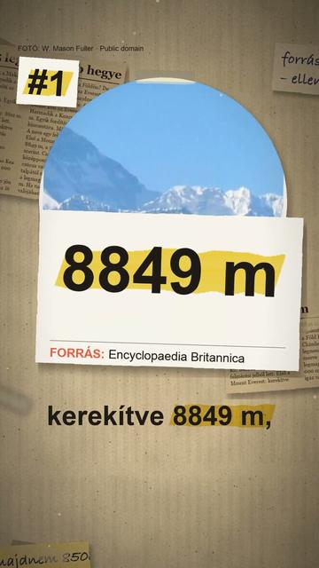

Megnézem a YouTube-onA világ 5 legmagasabb hegye
Röviden: A rangsor a tengerszint feletti magasság szerint áll, minden szám az Encyclopaedia Britannicából.
A rangsor a tengerszint feletti magasság szerint áll, minden szám az Encyclopaedia Britannicából. 1. Mount Everest: 8849 m; Kína és Nepál 2020 decemberében közösen 8848,86 m-t hirdetett ki. 2. K2 (Karakorum): 8611 m; a neve a felmérés jele: a Karakorum másodikként felmért csúcsa. 3. Kancsendzönga: 8586 m, a neve szikkimi értelmezésben „a nagy hó öt kincsestára”. 4. Lhoce: 8516 m, gerinc köti össze az Everesttel. 5. Makalu: a Britannica szerint 8463 m, más listákon 8485 m. Más mércével más a győztes (NOAA): az ecuadori Chimborazo csúcsa több mint 2072 m-rel messzebb van a Föld középpontjától, mint az Everesté, a hawaii Mauna Kea pedig a talpától a csúcsáig több mint 10 210 m.
Az összes rész forrásokkal: https://valoban.pages.dev/
Források
- Britannica: Mount Everest
- Britannica: K2
- Britannica: Kanchenjunga
- Britannica: Lhotse
- Britannica: Makalu
- NOAA: Highest point from Earth's center
6 forrás · Hogyan ellenőrzünk?
Hibát találtál? Írd meg nekünk, megnézzük.
Képek és kreditek
• a Mount Everest és a Khumbu-gleccser, Nepál (2009) – Vyacheslav Argenberg, CC BY 4.0 (https://creativecommons.org/licenses/by/4.0/) https://commons.wikimedia.org/?curid=125747460
• a Makalu délnyugatról (2006) – Ben Tubby, CC BY 2.0 (https://creativecommons.org/licenses/by/2.0/) https://commons.wikimedia.org/?curid=3931100
• a Makalu az Island Peakről, Nepál (2007) – mckaysavage, CC BY 2.0 (https://creativecommons.org/licenses/by/2.0/) https://commons.wikimedia.org/?curid=3414448
• a Lhoce déli fala (2008) – lluis Cabarrocas Ribas, CC BY 2.0 (https://creativecommons.org/licenses/by/2.0/) https://commons.wikimedia.org/?curid=22457302
• a Kancsendzönga Dardzsilingből (2025) – Istiakuddin Ahmed, CC BY 4.0 (https://creativecommons.org/licenses/by/4.0/) https://commons.wikimedia.org/?curid=178750416
• a K2 (2008) – Maria Ly from San Francisco, USA, CC BY 2.0 (https://creativecommons.org/licenses/by/2.0/) https://commons.wikimedia.org/?curid=14701917
• a K2 (2006) – Svy123, CC BY 3.0 (https://creativecommons.org/licenses/by/3.0/) https://commons.wikimedia.org/?curid=3411046
• a Chimborazo, Ecuador (2006) – Philippe Lavoie, Public domain (https://creativecommons.org/publicdomain/mark/1.0/) https://commons.wikimedia.org/?curid=1508308
• a Mauna Kea az óceán felől, Hawaii (2007) – Vadim Kurland, CC BY 2.0 (https://creativecommons.org/licenses/by/2.0/) https://commons.wikimedia.org/?curid=10580597
• a Mount Everest északról, Tibet (2005) – W. Mason Fuller, Public domain (https://creativecommons.org/publicdomain/mark/1.0/) https://commons.wikimedia.org/?curid=61202497
A képek módosítva: 9:16-ra kivágva, átméretezve, kameramozgással, ráégetett felirattal.